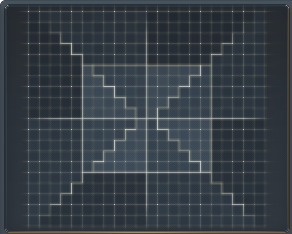

LEGION BOARD PLANNER
戰地拼圖模擬器
職業拼圖、目標屬性與自動排版，一次完成戰地規劃。
自由搭配 Lv.200／Lv.250 角色卡，標記想要的屬性區域，讓自動排列幫你找出合適的拼法，還能查看佔領效果。
12 種拼圖形狀51 個職業45 張上場上限
聯盟戰地階級 LEGION RANKS
新手
老手
大師
宗師
總司令
模擬器規則：一次最多派出 45 張角色卡（45 塊拼圖），同職業最多一塊，Lv.250 取代 Lv.200，不會額外增加可上場數量。所有放置拼圖需由中央四格的職業圖示起始，沿上下左右連接成整體；選取的不同目標區域會在求解時嘗試補上橋接格。攻擊隊佔領效果依實際不重複的佔領格計算，重疊格不會重複加成。佔領加成僅供規劃參考，請以遊戲實際顯示為準。
STEP 02
戰地拼圖棋盤
選擇單格或整區填格，完成排版後每張職業拼圖都會顯示獨立外框；中央八屬性可點擊交換位置。
✦ 屬性區域填格工具切換模式，直接點選棋盤標記屬性
戰地屬性棋盤 ・選擇單格或整區模式標記想要的屬性
即時佔領加成完成排版後顯示已佔領的屬性。查看完整效果

未標記目標格已放置拼圖職業拼圖外框手機可橫向捲動查看棋盤
目標 0 格拼圖 0 格差額 0 格
智慧排法
不更動原目標✦ 試試其他可行配置
如果無法一次完成所有目標，可以尋找其他符合連通規則的排法。
優先完整覆蓋指定屬性，連接中央同時求解；限時搜尋不代表全域最優或無解證明。
LEGION EFFECTS
僅計算已佔領格攻擊隊佔領效果
完成排列後，自動依有效佔領格計算加成。
已上場拼圖0 / 45
有效佔領格0
重複佔格0
尚未排版。請先選擇拼圖與目標格。
使用方式
戰地拼圖・45 張上場規則
01 選拼圖
在左側調整各職業群的 Lv.200／Lv.250 數量；同時上場最多 45 張角色卡，達上限時需先減少其他拼圖。
02 標目標格
點擊或拖曳棋盤設定目標區；可一鍵清空目標，若目標斷開，求解時會自動用拼圖接到中央四格。
03 自動解答
自動排版會驗證中央起點、整體連通、使用的角色數不得超過 45；完成後每張職業拼圖會有獨立金色輪廓，並可下載包含外框的圖片。
本工具僅供戰地拼圖規劃，並不連線或修改遊戲角色資料。屬性加成請以遊戲內實際數值為準；自動排版有搜尋上限，未找到結果不代表配置一定無解。